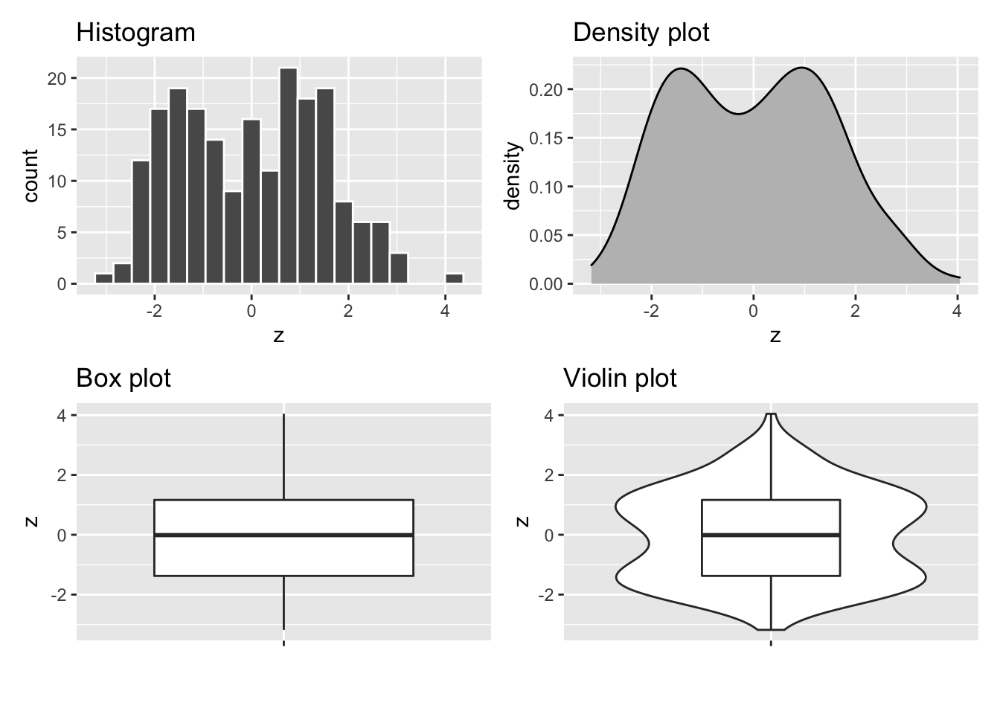
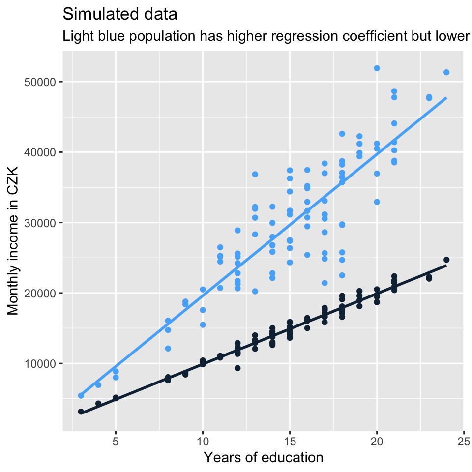
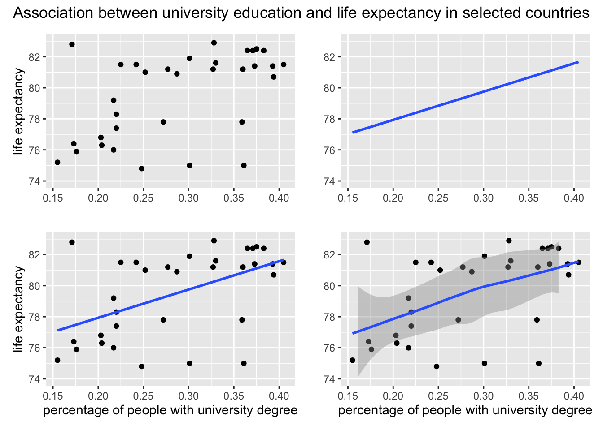

Simple linear regression
In this lecture, we will first introduce basic building blocks for regression analysis (something like regression blue print or basic plan) and we will try building and interpreting simple linear regression in R. Second, we will recall a few selected statistical concepts and put them in relation to regression analysis.
SECTION 1 Linear regression: basic building blocks
The simple (i.e., bivariate) regression line has the following formula:
\[ y = \alpha + \beta*x \]
It can also be generalized as follows:
\[ y = \beta_0 + \beta_1*x \]
\(\alpha\) or \(\beta_0\) in the generalized version is the intercept, i.e. the value of Y (dependent variable) when X (independent variable) = 0.
\(\beta\) or \(\beta_1\) in the generalized version is the slope, i.e. rate of change in Y when X changes by 1 unit.
As on the figure below, the actual observations usually do not fall exactly on the line. The difference between the blue regression line and each actual observation is called the error term or residual (more about the difference between the two below) and is shown as red line the figure.

Image source: http://www.sthda.com/english/articles/40-regression-analysis/167-simple-linear-regression-in-r/
Hence the full simple regression formula has the following form where \(\epsilon_i\) represents the error term for the i-th observation.
\[ y = \alpha + \beta*x + \epsilon_i \]
We use “error term” to refer to the (theoretical) difference between the real value of Y and the real average value of Y for given X. We use “residual” for the difference between our observed value of Y (can be distorted by measurement error) and our regression model. This means that error term is a theoretical concept while residual is the value available in our data when we do statistical modeling.
In other words, errors are the deviations of the theoretical (i.e. measured without measurement error) observations from the real population conditional mean. Residuals are the deviations of the actual observations we have from the sample conditional mean (i.e., the regression line). Residuals are observable estimates of the unobservable random errors.
As this distinction is theoretical, we often see the terms used interchangeably in practice.
Ordinary least square
The algorithm used to estimate the regression line works so as to minimize the sum of squares of residuals (Residual Sum of Squares, RSS). Hence linear regression is sometimes also referred to as ordinary least square regression or just OLS. For details on how OLS is calculated, see Fox (2015, p. 83).

\[ \small Residual\:sum\:of\:squares=-2^2+1.1^2+2.8^2+(-4)^2+1.6^2+1.8^2+(-0.3^2)+(-0.2^2)+(-0.1^2)+(-0.7^2)=35.3 \] \[ \small Sum\:of\:residuals=-2+1.1+2.8-4+1.6+1.8-0.3-0.2-0.1-0.7=0 \]
Regression and t-test
The line in the linear regression model can be perceived as conditional mean (as in the picture below). That is reminiscent of the t-test. In fact, simple regression with one binary predictor is equivalent to t-test. The regression coefficient of one binary predictor coded as 0 and 1 represents the difference of means of the two groups.

Centering predictors for better interpretation
Sometimes, we center the independent variables. The only reason for centering in OLS is for interpretation purposes.
There are two commonly used types of centering. Most frequent is centering by subtracting the mean. This results in intercept interpreted as the values of y when predictor x is set to its mean. Alternatively, we can use conventional centering point such such as 100 for IQ. (In this case, the intercept would be interpreted as value of y when the IQ is 100).
Dummy variables
Linear regression assumes that both the dependent variable and the independent variable(s) are measured in a metric scale (interval or ratio). If the dependent variable is categorical (or a factor to use the language used in R), we generally need a different model (such as logistic regression). If, however, one or more of the independent variables is categorical, we can still use them in linear regression after transforming them into binaries as binaries are, in a sense, metric variables.
When we have binary factors, we simply recode them as 0s and 1s and enter in the regression model. With multivariate factors, we have to transform each such factor into a set of binary dummy variables. Then we select one of them which we do not enter in the model (so called reference category) and the rest enters the model (e.g., for a factor with five distinct categories, four dummy variables will enter the model). Regression coefficients for the dummy variables than identify differences in group means compared to the one reference group.
The good news is that we don’t have to do the recoding ourselves. We can just enter a factor variable in the model and R will transform it into a set of dummies and leave one out for us.
SECTION 2 Quick recap on selected concepts in statistics
You should already be familiar with the following concepts (remember that the course prerequisites for this course are Statistics I and Statistics II), so at this place, we will be very brief about them.
Variable, its distribution, variability and mean
A variable is an attribute, which can take different values. E.g. height is a variable as different people can have different height. So is an opinion about something.
For a variable with known values, we can construct its distribution. Probability distribution gives probabilities of occurrence of different possible values. We can also show distribution using frequencies, i.e., actual counts, rather than probability distribution.
Below, there are some commonly used plot types which help understand distribution of a variable visually.

Variability within a variable can either be expressed visually as distribution (plots above), or it can be expressed with a numeric value, typically variance.
Variance of the variable z is the expected value of the squared deviation from its mean, we use the following formula:
\[ var(z) = E[(z_i-\mu_z)^2] = \frac{\sum (z_i - \bar{z})^2}{n} \]
We typically work with the standard deviation (variance transformed by taking its square root) rather than the variance because standard deviation is on the original scale of the variable distribution. The formula is as follows:
\[ \sigma_z = \sqrt{var{(z)}} \]
We also use point estimates to simplify a variable. A typical example is arithmetic mean.
We refer to the arithmetic mean of variable z as E(z) generally, or μz to refer specifically to population mean or \(\overline{x}\) to refer to sample mean.
Sampling distribution
Imagine you collect a survey sample from a population. It is only one of many and many theoretical samples you could have collected (e.g, there are many ways you can sample 1000 people from the Czech population). It follows that when you use the sample to calculate some values (mean of a variable, variance of a variable, … regression coefficient for a specified model), these are not the only possible values. In fact, each of these values is just one data point from a theoretical distribution of all the different estimates you could calculate from all the possible samples. This theoretical distribution is called sampling distribution.
“The sampling distribution is the set of possible datasets that could have been observed if the data collection process had been re-done, …” (Gelman et al., 2020, p. 50)
Obviously, we only have one sample from the sampling distribution. In other words, we have no variation in our estimates, e.g., we only have one mean available. But we have variation in the data and that is what we use to estimate (or conceptualize) the expected variation in the estimates. (For regression coefficients, this is where assumptions kick in, we will talk about it in future lectures.)
Standard deviation of the sampling distribution (i.e., of the distribution of a given estimate) is called standard error and it is estimated as \(\frac{\sigma}{\sqrt n}\).
Confidence intervals are extension of standard errors. If the distribution is normal, 95 % confidence intervals are constructed by subtracting and adding ca 2 standard errors to the point estimate, see picture below (beta-hat is the estimate of the regression coefficient beta from the data).

Source: (Gelman et al., 2020, p. 51)
Note that the sampling distribution is not technically normal. It is Student’s t-distribution (or just t-distribution) which will only converge to normal when the number of observations is large enough, ca 30 and more. For very small N, the approximation of 2 standard errors for constructing 95% confidence interval is incorrect.
Statistical significance and hypothesis testing
Conventional wisdom says: statistical significance is p-value less than 0.05, relative to some null hypothesis (hypothesis of no difference / no effect). Fair enough, but remember that the 0.05 value is arbitrary.
“[p-value is] the probability under a specified statistical model that a statistical summary of the data (e.g., the sample mean difference between two compared groups) would be equal to or more extreme than its observed value” (Wasserstein & Lazar, 2016)
Intuition behind statistical significance: an estimate is said to be NOT statistically significant if the observed value could reasonably be explained by chance.
This thinking arises from a still dominant yet heavily criticized approach of so called null-hypothesis testing (NHT): - null hypothesis: estimate = 0 - alternative hypothesis: estimate != 0
Critique of NHT
- NH is unrealistic in social sciences (only a matter of sample size, with enough data, everything is statistically significant)
- NH is theoretically uninteresting (effect size and variations of effect sizes in different groups is what really matters)
- NH is a very low threshold for any analysis, because non-rejection tells us that there is not even enough information in the data to move beyond the banal null hypothesis of no difference.
- Even statistically non-significant data can carry important information (not just for meta-analysis).
Critique of malpractice in using p-value
- p-value is often used as a license for making a claim of a scientific finding (or implied truth) while neglecting many other important considerations (“design of a study, the quality of the measurements, the external evidence for the phenomenon under study, and the validity of assumptions that underlie the data analysis.” (Wasserstein & Lazar, 2016)
- p-value is often used incorrectly (significance chasing a.k.a. p-hacking): (1) multiple statistical tests, (2) choice of data to be presented based on statistical-significance result.
- p-value is often interpreted incorrectly (such as when non-significant p-value is considered evidence for no difference).
- There is (usually almost) no difference between 5.1% and 4.9% significance level.
Examining relationship between variables
In social sciences, we often want to know how two variables are associated, i.e., how they vary together (co-vary).
A basic measure of association is called covariance. Many measures of association draw on it one way or another. It is very closely related to variance. Inspect the the formulas below to see for yourself:
\[ var(x) = E[(x_i - \mu_x)^2] = E[(x_i - \mu_x)*(x_i - \mu_x)] = \\ \frac{\sum[(x_i - \mu_x)*(x_z-\mu_x)]}{n} \]
\[ cov(x) =E[(x_i - \mu_x)*(y_i - \mu_y)] = \\ \frac{\sum[(x_i - \mu_x)*(y_i-\mu_y)]}{n} \]
The value of covariance is rarely useful as the end product. Just like we prefer standard deviation as a scaled form of variance, we prefer correlation as scaled form of covariance. While standard deviation is scaled to the scale of the original variable, correlation is scaled to take a value between -1 and 1. In this sense, correlation is standardized covariance and measures strength of association.
If you square Pearson correlation coefficient between two variables, you get the proportion of variance in one variable explained by knowledge of the value for the other variable. This relationship is symmetrical (if x explains 20% of variation in y, then y explains 20% of variation in x). When you think about it, this means that we should not understand correlation coefficient as linear in the sense that increase of correlation coefficient by 0.1 always represent the same increase in the strength of association. If the coefficient is 0.2, we explain only 0.04, i.e., 4% of variance in x by knowing the value of y. If the coefficient is 0.3, it is 9%. If the coefficient is 0.4, it is 16%. So moving from 0.2 to 0.3 means 5 percentage point decrease of unexplained variance, whereas moving from 0.3 to 0.4 means 7 percentage point decrease of unexplained variance. And so on.
Visual representation of different values of Pearson correlation coefficient puts things into perspective:

Code by whuber from: https://stats.stackexchange.com/questions/15011/generate-a-random-variable-with-a-defined-correlation-to-an-existing-variables
Correlation coefficient and regression coefficient are conceptually a different thing. While correlation coefficient shows the strength of association, regression coefficient shows how, on average, the value of y changes when the value of x changes by one unit. The fact that the regression lines in the set of plots above get steeper and steeper as the correlation gets stronger results from the data generation process. But it is no necessity. There can be steeper regression lines between less correlated variables and vice versa. See another set of simulated data below which demonstrates it.

The four plots below show that the message sent out by visualization of a relationship between two variables can differ based on the tools we use. The plots below all visualize association between the same two continuous variables. Plotting just the regression line or just the points can send out a fairly different message about the association. Combination of the two seems more appropriate in this particular situation. Also notice that using straight line is not the only way to model association between two variables.

Similarly, the message sent out by visualization can be strongly influenced plotting decisions (or defaults) which have no relation to the data. See below two plots of the same relationship, but plotted with different width and y scale limits.